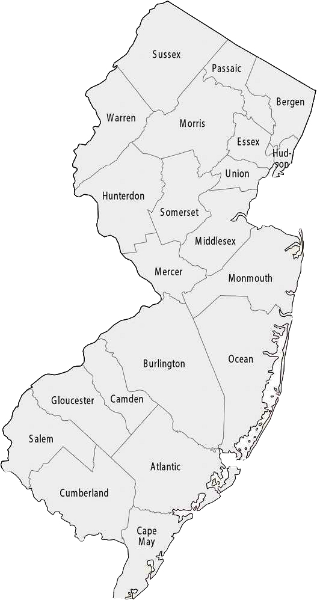

WINTER VOLUNTEERS
Serving Middlesex County, New Jersey
This website is used to co-ordinate residents and volunteers in MIDDLESEX COUNTY, New Jersey.
If you are not a Middlesex County resident, please select another county and click "submit" to be re-directed to the correct website:
|
 |